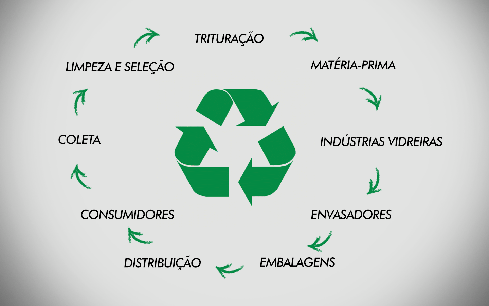

Reciclagem de vidro

Introdução
O vidro é obtido pela fusão de componentes inorgânicos a altas temperaturas, e consequente resfriamento rápido da massa resultante até um estado sólido não cristalino.
Mas por que é tão importante reciclar este material?
O vidro, se descartado no ambiente não o polui, uma vez que seu material é inerte (não se degrada, não se desfaz). Mas se considerado o volume nos aterros sanitários, temos que concordar que o vidro é o campeão em entulhos, até por que não pode ser compactado como o papel, se feito isso se transforma em perigosos cacos cortantes. Resultado: o vidro pode se acumular no ambiente ao ponto de não ter espaço suficiente para comportá-lo, é o que ocorre em países que não tem planejamento.
A melhor alternativa para o lixo vítreo é a sua reciclagem, vejamos o porquê.
Um quilo de vidro quebrado dá origem a exatamente um quilo de vidro novo, e a maior vantagem é que o vidro pode ser reciclado infinitas vezes.
Como Ele é Reciclado
O vidro recebe uma lavagem (retirar sujidades) e em seguida passa por um processo de trituração. Os cacos são então aquecidos e fundidos a uma temperatura acima de 1300 °C. Após esse processo, garrafas, copos, etc., podem ser moldados e utilizados novamente. É uma verdadeira economia de energia e matéria-prima.
Atualmente estima-se que mais de 40% das embalagens de vidro produzidas no Brasil são de material reciclado, a expectativa é que este número aumente. Para isso precisamos colaborar adquirindo o hábito de separar o lixo. Coloque os utensílios de vidro separados em caixas de papelão e encaminhe para a coleta seletiva de sua cidade.